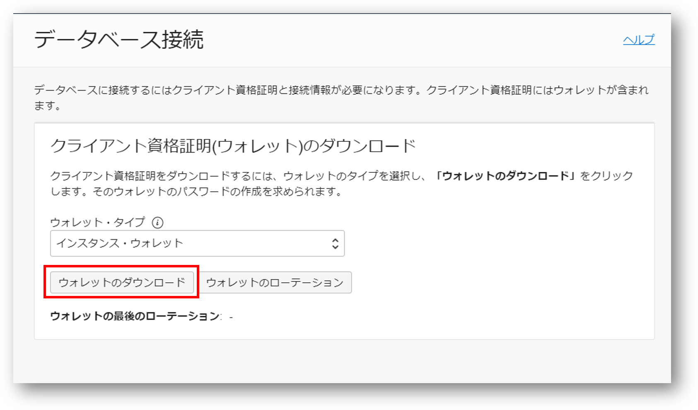
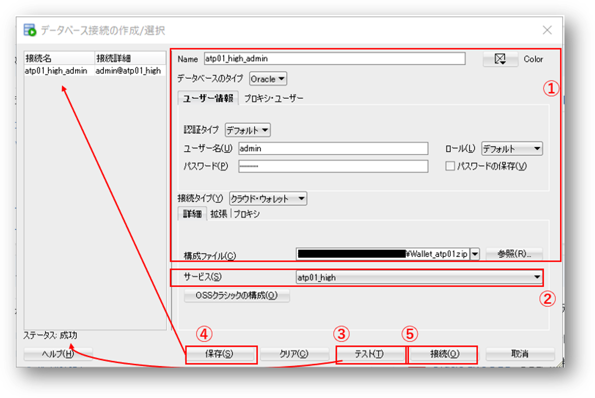

はじめに
Autonomous Database にはさまざまなツールが同梱されており、簡単にご利用いただけますが、 一方で、これまでお使いのアプリケーションからの接続するときはどのように接続するのでしょうか？
Autonomous Databaseには暗号化およびSSL相互認証を利用した接続が前提としており、そのため接続する際はクレデンシャル・ウォレット（Credential.zipファイル）を利用する必要があります。
本章ではこのクレデンシャル・ウォレットを使用した接続方法について確認していきます。 尚、クレデンシャル・ウォレットの扱いに慣れてしまえば、Autonomous だからと言って特別なことはありません。
前提条件
- ADBインスタンスが構成済みであること
※ADBインタンスを作成方法については、101:ADBインスタンスを作成してみよう を参照ください。 - SQL Developerを使用した接続を行いたい場合には、当該クライアントツールがインストール済みであること。インストールはこちらから
目次
所要時間 : 約20分
1. クレデンシャル・ウォレットのダウンロード
ウォレットを利用したADBインスタンスへの接続には、対象インスタンスへの接続情報が格納された クレデンシャル・ウォレット を利用する必要があります。 （より高いセキュリティを担保するために、ADBインスタンスはcredential.ssoファイルを利用した接続のみを受け入れます。） まず、ADBへの接続情報が格納されるCredential.zipファイルをお手元のPCにダウンロードしましょう。
-
OCIのコンソールにアクセスし、左上のメニューから Oracle Database を選択します。Oracle Databaseのメニュー一覧が表示されたら、 Autonomous Database の Autonomous Transaction Processing をクリックします。

-
作成したATPインスタンスをクリックし、ATPインスタンスの詳細画面を表示します。
詳細画面の DB接続 をクリックします.

-
ダウンロードウィザードが起動するので、 ウォレットのダウンロード をクリックします。

【ウォレットの選択について】
「ウォレット・タイプ」で、２種類のタイプから１つ選択することができます。今回はデフォルトの「インスタンス・ウォレット」を選択します。
- インスタンス・ウォレット
- 特定のインスタンスの資格証明のみが記載
- アプリケーションからの接続はこちらの利用を推奨
- リージョナル・ウォレット
- 選択されたリージョン内の全てのインスタンスの資格証明が記載
- 他のインスタンスへの接続時も利用できるため、主に管理目的での利用に限定ください
- インスタンス・ウォレット
-
ウォレットファイルに付与するパスワードを入力し、ダウンロードをクリックして、お手元のPCの任意の場所に保存してください。 （本ハンズオンガイドでは便宜上、パスワードは Welcome12345# に統一ください）

2. 設定ファイルの編集
作成したADBインスタンスに接続するためには、接続に使用するクライアントの設定ファイルの編集を行う必要があります。この設定を OCI Cloud Shell で行う手順をご紹介します。
Cloud Shellは、Oracle CloudコンソールからアクセスできるWebブラウザ・ベースのターミナルで、Oracle Cloud Infrastructureの全ユーザーが利用可能です。 ローカルの端末にOCI-CLIをインストールせずとも、コンソール上でコマンドベースの操作が可能になります。
-
Cloud Shellを開いてみましょう。Oracle Cloud Infrastructureのテナンシにサインインし、コンソールのヘッダーにあるコマンド・プロンプト・アイコンをクリックします。

Cloud Shell環境が作成され、コマンドを実行したりAutonomous Databaseに接続したりすることが可能になります。 Cloud Shellの起動には、約1分ほどの時間がかかります。

Note
次のようにURLを作成してクラウド・シェルを直接開くという方法もあります。この場合、<region>と<tenancy>には実際の値を入れる必要があります。
https://console.us-<region>-1.oraclecloud.com/a/<tenancy>?cloudshell=true -
ADB WalletをCloud Shell上にアップロードします。 Cloud Shellの左上のメニューをクリックし、「アップロード」をクリックします。 1. クレデンシャル・ウォレットのダウンロード でダウンロードしたファイルを”Drag & Drop”します。
Cloud Shellの画面に、ファイルを直接”Drag & Drop”してアップロードすることも可能です。
lsコマンドで、ファイルが正しくアップロードされていることを確認します。
ls「Wallet_atp01.zip」が存在していればOKです。
-
格納用のディレクトリを作成し、ウォレットファイルを$HOME/network/admin 配下に移動します。
格納用のディレクトリを作成します。
mkdir -p ~/network/adminウォレットファイル Wallet_atp01.zip を移動します。
mv Wallet_atp01.zip ~/network/admin -
作成したディレクトリに移動し、圧縮されたウォレットファイルを展開します。
作成したディレクトリに移動します。
cd ~/network/adminunzip Wallet_atp01.ziplsコマンドでadminディレクトリ内のファイルを一覧し、次のようなファイルが揃っていればOKです。

-
TNS_ADMIN 環境変数にウォレットの保存先を設定します。
export TNS_ADMIN=~/network/adminNote
アプリ毎に接続するインスタンスを切り替えたい場合は、インスタンス毎に wallets_atp01 といったようにディレクトリを定義し、アプリ毎に環境変数TNS_ADMINのパスを切り替えると簡単です。
-
sqlnet.ora の下記の行を編集し、ウォレットの保存先を置き換えます。前の手順で、保存先をTNS_ADMIN環境変数に格納しているため、こちらを使います。
編集前：
WALLET_LOCATION = (SOURCE = (METHOD = file) (METHOD_DATA = (DIRECTORY="?/network/admin")))編集後：
WALLET_LOCATION = (SOURCE = (METHOD = file) (METHOD_DATA = (DIRECTORY=$TNS_ADMIN)))編集方法の一例として、viを使用した操作方法は次の通りです。
5-1. sqlnet.ora をviで開く。
vi sqlnet.ora5-2. 次の操作方法を参考に、WALLET_LOCATION の値を編集します。
【参考】 viの操作方法
キー入力 動作 上下左右キー カーソルの場所を移動する i カーソルの場所から編集する（InsertModeに入る） ESCキー InsertModeを抜ける x カーソルの場所を一文字消す :wq ファイルを保存して閉じる :q ファイルを閉じる（それまでの編集は破棄される） :q! 強制的に終了する -
環境変数”ORACLE_HOME”を設定します。
export ORACLE_HOME=~echoコマンドで中身を確認し、/home/[username] が出力されればOKです。
echo $ORACLE_HOME -
tnsnames.oraから、接続用のサービス情報を確認します。 次にように４つの接続サービスがあることが分かります。

Note
Cloud Shellから接続する場合、SQL*Plus (3-1) およびSQLcl (3-2) を使用して接続することができます。
3. ADBに接続
3-1. SQL*Plus を使った接続
Cloud Shellには、SQL Plusのクライアントが実装されているため、OCI上のADBに簡単に接続することができます。
-
次のコマンドをCloud Shellのターミナルに入力し、ADBにSQL*Plusを起動します。
sqlplus [username]/[password]@[接続サービス名]本ハンズオンガイドを参考にADBインスタンスをお作りいただいた方は、次のようなコマンドになります。
sqlplus admin/Welcome12345#@atp01_lowusername admin password Welcome12345#（インスタンス作成時に指定した値） conn_string atp01_low （接続サービス名 ） ※ 接続サービスに関する詳細は ADB-S技術詳細資料 を参照ください。
補足
SQL*Plusを起動した際に以下のエラーが出てしまった場合は、sqlplusの共有ライブラリを参照できるようにパスを設定してください。
sqlplus: error while loading shared libraries: libsqlplus.so: cannot open shared object file: No such file or directory
libsqlplus.soファイルが配置されているパスを環境変数LD_LIBRARY_PATHに格納します。 次のようにして、locateコマンドで得られたパスを環境変数LD_LIBRARY_PATHに格納します。locateコマンドで、libsqlplus.soファイルが配置されている場所を確認します。
locate libsqlplus.soexportコマンドで、得られたパスを環境変数LD_LIBRARY_PATHに格納します。 例えば、
locate libsqlplus.soの出力結果が/usr/lib/oracle/21/client64/lib/libsqlplus.soだった場合は次のようになります。export LD_LIBRARY_PATH=/usr/lib/oracle/21/client64/lib正しく格納できているかをechoコマンドで確認します。指定した通りのパスが表示されればOKです。
echo $LD_LIBRARY_PATH
3-2. SQLcl を使った接続
SQLclは、無料のコマンドラインツールです。（SQLclについてはこちら）
SQL＊Plusに似ていますがSQL*Plusよりも多くの機能が備わっており、Autonomous Databaseにも簡単に接続できるようになっています。
-
SQLclを起動します。次のコマンドをCloud Shellのターミナルに入力してみましょう。
sql /nolog -
クレデンシャル・ウォレットを指定します。
set cloudconfig /home/oracle/labs/wallets/Wallet_atp01.zip -
インスタンスに接続します。
connect admin/Welcome12345#@atp01_low
3-3. SQL Developer を使った接続
手元のPCにインストールしたクライアントツールを利用してアクセスします。 SQL Developerを起動し、管理者アカウント(ADMIN)でADBへ接続します。
-
SQL Developerを起動後、画面左上の接続アイコンをクリックします。

-
以下の記載例を参考に各項目を入力し、ADBインスタンスへの接続設定を行います。
- 各項目に接続情報を入力します。
Name atp01_high_admin
（"high"は接続サービスの一つ）ユーザー名 admin パスワード Welcome12345#
（インスタンス作成時に設定したADMINユーザーのパスワード）パスワードの保存 チェックあり
（実際の運用に際しては、セキュリティ要件を踏まえ設定ください）接続タイプ クラウド・ウォレット 構成ファイル （事前にダウンロードしておいたウォレットファイルを選択） -
サービス：
atp01_highを選択（接続サービスに相当。詳細は にて扱います） -
テストをクリックし、正しく接続できるか確認します。（正しく接続出来れば、左下のステータスに成功と表示されます。） -
テストに成功したことを確認し、
保存をクリックします。（左上の接続リストに表示され、次回以降の登録作業をスキップできます。） -
接続をクリックします。
- 各項目に接続情報を入力します。
-
ワークシートが起動しますので、サンプルクエリを実行してADBインスタンスに正しく接続できているか確認します。
-
SQL Developerにてご自身で作成した接続を選択します。
-
以下のクエリをワークシートに貼り付けます。
SELECT USERNAME FROM USER_USERS; -
スクリプトの実行 ボタンをクリックし実行します（左隣の 文の実行 ボタンで実行しても構いません）
-
エラーなく実行結果が返ってくれば確認完了です

-
3-4. Database Actions を使った接続
Database Actionsを使った接続については、こちらをご確認ください。
以上で、この章は終了です。
次の章にお進みください。